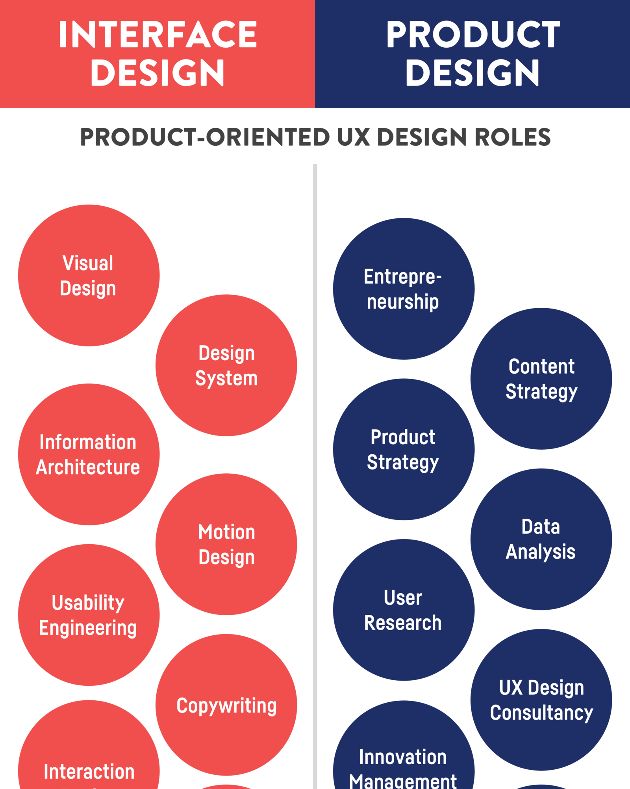

"We endlessly discuss design details, sounding job titles, whether we should code, or about having a seat on a table, when we should rather care about how to improve our value for the product and business, how to create significant value for our users, and how to translate UX outcome into business goals.” — Nikkel Blaase UX and Product Designer at XING
Product-oriented UX design rolesNikkel Blaase states this while pointing out that UX design has become a craft that has been focusing on all the wrong things. At the rate it is going, it is going to lose its relevance. Companies will only see UX design as a “service to make things look pretty.” This is problematic because in reality, UX design can be extremely beneficial to a product development process and making any higher up decisions. UX designers are necessary to translate the user experience into legitimate, researched, business goals.
Since UX designers are much more that just a pretty interface, they should be measured by the success of a product from the perspective of a user or a business. This is how UX design can redefine its role as something with greater responsibilities in larger organizations.
Most of today’s job titles are actually very limiting in covering a person’s actual responsibilities. This becomes frustrating for designers in particular because it puts them in a bubble. They end up only working on a portion of what UX design really is. It not only becomes a loss for the designer, but the company as whole. They miss out on opportunities to explore the full potential of the product. As a result, job titles are prohibiting.
Companies need to focus on what it means to hire a UX designer. They are hiring someone who should be involved in the entire product development process. These are people who have great creative potential and insight on the target audience. In no way should their role take up only a portion of the development process.